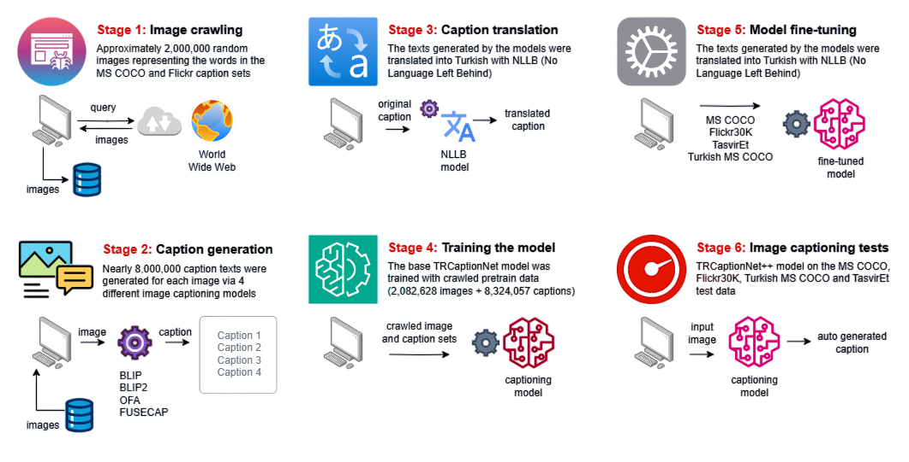
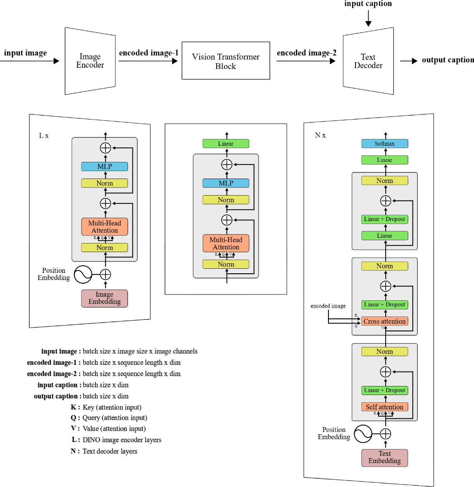

class TRCaptionNetpp(nn.Module):
"""
TRCaptionNet++ (pseudo):
- Vision encoder: DINOv2
- Language decoder: BERT (decoder mode with cross-attention)
- Projection: tiny Transformer (Proj)
"""
def __init__(self, config: dict):
super().__init__()
...
@torch.no_grad()
def generate(
self,
images,
max_length: int = None,
min_length: int = 12,
num_beams: int = 3,
repetition_penalty: float = 1.1
):
image_embeds = self.vision_encoder(images.half()).float()
if self.proj is not None:
image_embeds = self.proj(image_embeds)
image_atts = torch.ones(image_embeds.shape[:-1],
dtype=torch.long,
device=images.device)
model_kwargs = {
"encoder_hidden_states": image_embeds,
"encoder_attention_mask": image_atts
}
input_ids = torch.full(
(image_embeds.shape[0], 1),
fill_value=2,
device=images.device,
dtype=torch.long
)
outputs = self.language_decoder.generate(
input_ids=input_ids,
max_length=self.max_length if max_length is None else max_length,
min_length=min_length,
num_beams=num_beams,
eos_token_id=self.tokenizer.sep_token_id,
pad_token_id=self.tokenizer.pad_token_id,
repetition_penalty=repetition_penalty,
**model_kwargs,
)
captions = [self.tokenizer.decode(out,skip_special_tokens=True)
for out in outputs]
return captions
@article{yildiz2025trcaptionnetpp,
author = {Serdar Yildiz and Abbas Memis and Songül Varli},
title = {TRCaptionNet++: A high-performance encoder-decoder based deep Turkish image captioning model fine-tuned with a large-scale set of pretrain data},
journal = {Turkish Journal of Electrical Engineering and Computer Sciences},
volume = {33},
number = {5},
year = {2025},
pages = {669--687},
doi = {10.55730/1300-0632.4150},
url = {https://doi.org/10.55730/1300-0632.4150},
}